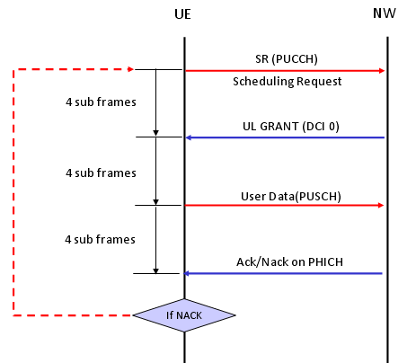

|
LTE Basic Procedure Go Back To Index Home : www.sharetechnote.com |
|
|
Uplink Data Transmission Scheduling - Non Persistent Scheduling
In Persistent Scheduling mode, UE can send the data to Network anytime since Network is sending UL Grant all the time. But what if Network does not send UL Grant all the time ? In this case, UE has ASK the network to send UL Grant (DCI 0). If network send UL Grant, then UE can send UL data as allowed by the UL Grant. Overall procedure is as follows :
i) UE send SR (Scehduling Request) on PUCCH ii) Network send UL Grant (DCI 0) on PDCCH iii) UE decode DCI 0 and transmit PUSCH based on the RBs specified by DCI 0 iv) Network decode the PUSCH v) Network send ACK/NACK on PHICH vi) If Network send NACK, go to step i)

|